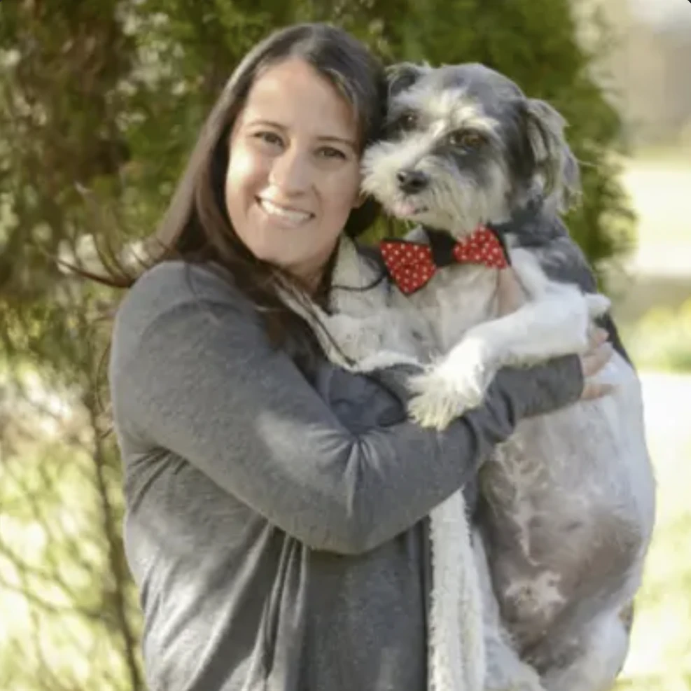

Big, small, love 'em all.
Sandra used to be a professional dog walker in downtown Boston, caring for every breed from the tiny to the biggies! She'd pick them up in a dog bus and hit the trails off leash in the Blue Hills. Everyone was on voice command, and it was always a happy pack.
She has also cared for her boss's diabetic dog, so she's comfortable giving medications when needed.
- Usually responds in under an hour
- 100% bookings with photo updates
- Sends updates with Rover Cards
- 25 years of experience
- Oral medication administration
- Injected medication administration
- First aid/CPR
- Senior dog experience
- Special needs dog experience
- Can provide daily exercise


A Little Pack, A Lot of Love.
At Sandra's, your dog is treated like one of her own! With a work-from-home setup, your pup is never far from sight and gets plenty of attention, cuddles, and companionship throughout the day.
From fresh air and sunshine to daily walks, potty breaks, and bedtime, Sandra keeps your dog's routine as close to home as possible. Furniture is fair game, walks are part of the day, and your pup is never left alone for more than a quick trip out.
Sandra believes that using the same trusted sitter helps dogs feel more comfortable and less stressed with every visit. It's peace of mind for you and a familiar, loving place for your pup. You're both always welcome in her little pack!
- Has an unfenced yard
- Non-smoking household
- Has 1 dog
- No children present
- Dogs allowed on bed
- Dogs allowed on furniture
- Potty breaks every 2-4 hours
Ready to join the lil' pack?
Reach out with your dates and set up a meet and greet so your pup can check out the space.